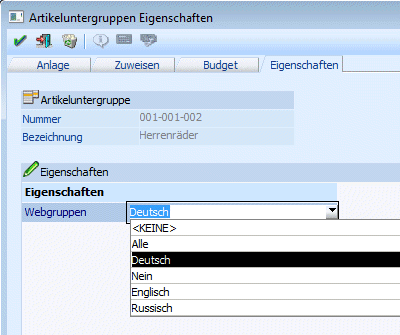

In diesem Register können Eigenschaften für die Artikeluntergruppen hinterlegt werden. Eigenschaften können ein Stammdatenobjekt näher beschreiben bzw. können über die Eigenschaften gewisse Optionen bei einem Objekt hinterlegt werden.

Die Definition der Eigenschaften (Führungstext, Typ, usw.) erfolgt im WinLine Start unter Optionen - Eigenschaften.
Im Filter kann auf die Eigenschaften einer Artikeluntergruppe zugegriffen werden. Nähere Informationen bezüglich des Filters finden Sie im Handbuch WinLine Allgemein.
Die Eigenschaft "Webgruppen" ist eine vordefinierte Eigenschaft. Diese wird für die WinLine WEB Edition benötigt. Wird bei der Artikeluntergruppe der Wert "Deutsch" hinterlegt, so wird die Artikeluntergruppe in der Baumstruktur in der WEBEdition in deutscher Sprache auch dargestellt. Wird aus der Auswahllistbox eine andere Sprache bzw. der Eintrag "Alle" gewählt, so steht die Artikeluntergruppe für die jeweilige Sprache (bzw. für alle Sprachen) zur Verfügung.
Ø Eigenschaftenfilter (Tabelle)
Durch Drücken des Buttons "Eigenschaftenfilter" (dieser Button bleibt gedrückt, bis er erneut angewählt wird) werden nur mehr jene Eigenschaften angezeigt, die auch mit einem Wert versehen sind.